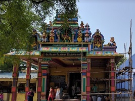

Srivilliputhur - Places to visit
-

Sri Andal Renga Mannar Temple
Birth place of Sri Andal and must visit place for Vaishnavites. Thirupavai brought by Sri Andal. Car Festival is one of the famous festival in Andal Temple.
-
Sri Vadapatrasayee Temple
It is one of the 108 divya desams of Lord Sri Vishnu and located nearer to Andal Temple. Sri Andal birth place is located inside the temple.
-

Sri Srinivasa Perumal Temple
It is located 3 KMs away from Srivilliputtur and also known as "ThenThirupathi". Lakhs of devotees will come to the temple on the occassion of Purattasi Saturdays.
-

Sathuragiri Temple
It is located inside the forest and can be reached by trekking 7 KMs in the hill. Medicine Plants and waterfalls can be seen on the way to the temple. Siddhars are believed to be living in the forest.
-
Vaidyanathar Swamy temple
Famous Shiva temple located in a place called Madavar Valagam which is 1 KM away from Andal Temple on the way to Rajapalayam.
-

Shenbaga Thopu
It is a forest and perfect place for Trekking. Located 6 KMs away from Srivilliputtur. Grizzled Squirrels can be seen in the forest if you are lucky.
-
Grizzled Squirrel Wildlife Santuary
Declared as a sanctuary in December 1989 and spreads over 480 sq.KM. As per Tamilnadu Butterfly society, there are 113 butterfly species found in the Sanctuary
-

Arulmigu Periya Mariamman Temple
Devoted to Goddess Mariamman who is an avatar of Goddess Parvathi and located in Bye Pass road. Pookuzhi festival is a main festival of this temple and is celebrated on March / April month.
-
Pilavakkal Dam
Located in the foot hills of Western Ghats which is approximately 30 Kms from Srivilliputhur. Can breath fresh air and spend time in the park.